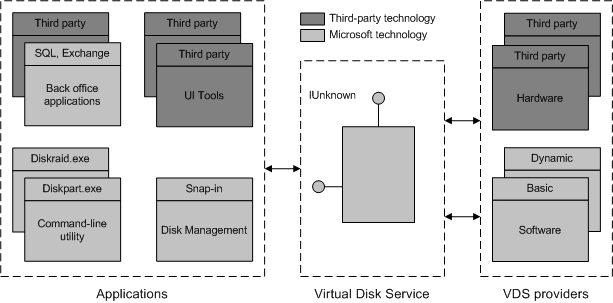

[Beginning with Windows 8 and Windows Server 2012, the Virtual Disk Service COM interface is superseded by the Windows Storage Management API.]
Virtual Disk Service is a Microsoft Windows service that performs query and configuration operations at the request of end users, scripts, and applications. The service extends the existing storage capabilities of Windows Server operating systems in the following ways:
VDS does not perform the following storage-management activities:
The sections that follow describe the architecture of VDS, the role of VDS providers, and the API.
VDS defines three interfaces: a single interface between the application layer and the service, and two interfaces between the service and provider programs in the data layer. The following illustration shows the application-to-service boundary and the service-to-provider boundary.

N-tier architecture enables VDS to coordinate with the file-system functions, synchronize provider activities, and arbitrate between applications. Being between the application and provider, VDS presents uniform functionality to applications even though some the underlying providers might lack such uniformity.
The service implements common functionality: formatting volumes, adding and removing drive letters or mounted folders, as well as managing unallocated disks—disks having no partition information. VDS also returns event notifications to registered applications. For details, see VDS Notifications.
VDS defines two provider interfaces, one for a software provider and one for a hardware provider. Each provider implements a different portion of the API defined by VDS:
A software provider is a host-based program that is supported by a kernel-mode driver in the storage I/O stack. The provider-kernel runtime interacts with the Mount Manager at boot time or the Plug and Play (PnP) Manager at discovery time to claim each disk. Software providers operate on volumes, disks, and disk partitions.
VDS includes two provider types. The basic software provider manages basic disks and offers no fault-tolerant binding. The dynamic software provider manages dynamic disks and offers fault management where applicable. Software-provider behavior is consistent with the behavior of basic and dynamic disks on the host. For example, if the operating system of a given host supports fault-tolerant dynamic disks, VDS also supports this behavior on the host.
A hardware provider implements the methods that are used to manage a storage subsystem—a hardware disk array or adapter card that enables the creation of logical disks configured to enhance performance, data availability, or data recovery. Many major RAID cabinet manufacturers have produced a hardware provider that is designed for use with VDS. Service consumers must obtain a hardware provider and associated hardware from the manufacturer.
The capabilities of a hardware provider depend on the capabilities of the underlying hardware. Consequently, the degree to which each manufacturer implements the API can vary. For example, manufacturers can include additional methods to optimize configurations, monitor and dynamically tune performance, automate fault management, or provide other beneficial functionality.
Hardware providers offer several configuration options that are not available to the software providers. Most notable is the automagic configuration model, which presents an attribute-based view of storage to each application. Binding hints, such as "mostly reads" or "fast crash recovery required" replace the complexity of binding physical storage into virtual storage. Each hardware provider performs extent mapping, space allocation, and binding-type selection based on the hints that are submitted by an application. For the complete hardware provider description, including the configuration options, see the documentation that is supplied by the subsystem manufacturer.
Applications can invoke VDS methods to query and configure host-based disks, RAID storage, or both. For an overview of the API, see the VDS Object Model.
Typical applications for VDS solve configuration management and monitoring problems, and range from dedicated storage-management systems to back-office applications seeking better control over configuration or fault management. The following applications use VDS today:
Â
Â